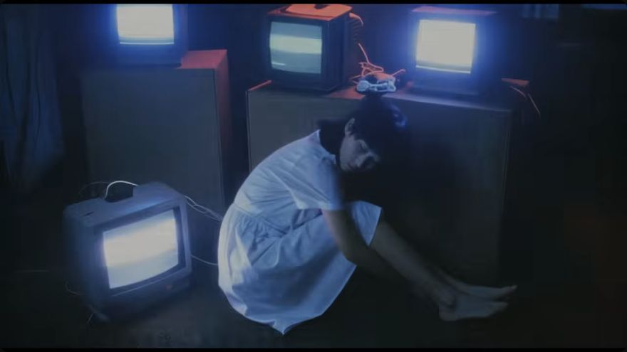
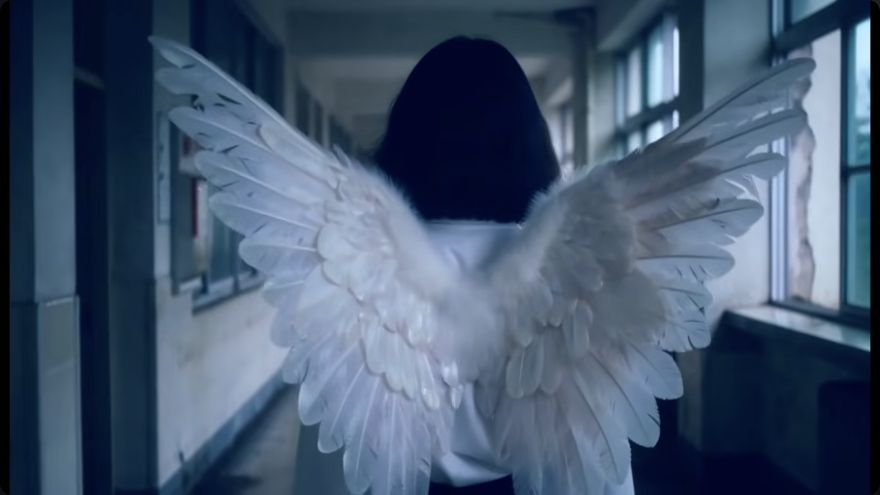
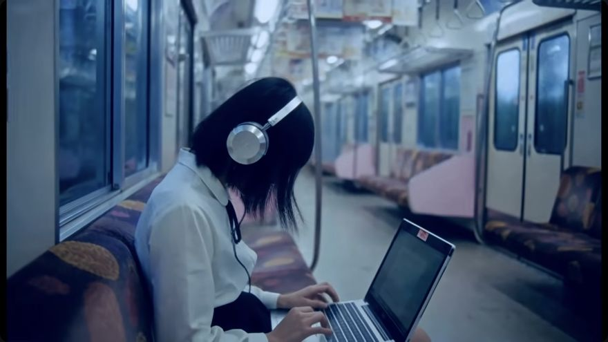

THE SONG
A moment outside the routine
Three lyric passages trace the movement from repetition to a brief sense of relief.
Read the chapterIMAGE · SOUND · MEANING

MUSIC VIDEO ANALYSIS
A fleeting connection interrupts a difficult routine. White wings, changing faces, and city spaces make the way out uncertain.
SYNTHPOP / DARKWAVE / COLDWAVE

THE SONG
Three lyric passages trace the movement from repetition to a brief sense of relief.
Read the chapter
THE VIDEO
Rooftops, changing appearances, and repeated images leave the story open to interpretation.
Read the chapter
THE FRAME INDEX
A closer examination of the people, places, colors, and objects in the video.
Read the chapter